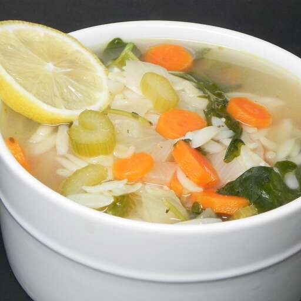

This is a recipe for the Lemon Chicken Orzo Soup that is inspired by Panera Bread's version.
It will take roughly 1 hour and 20 minutes to prepare 12 servings of 6 quarts each.
Ingredients:
- 8 oz orzo pasta
- 1 tsp olive oil
- 3 medium carrots, chopped, or more to taste
- 3 ribs celery, chopped
- 1 medium onion, chopped
- 2 cloves garlic, minced
- 1/2 tsp dried thyme
- 1/2 tsp dried oregano
- salt and ground black pepper to taste
- 1 bay leaf
- 3 (32 oz) cartons fat-free, low-sodium chicken broth
- 1/2 cup fresh lemon juice
- 1 lemon, zested
- 8 oz coocked chicken breast, chopped
- 1 (8 oz) package baby spinach leaves
- 1 lemon, sliced for garnish (Optional)
- 1/4 cup grated Parmesan cheese (Optional)
Directions:
-
Bring a large pot of lightly salted water to a boil. Stir in orzo and return to a boil.
-
Cook pasta uncovered until partially cooked through but not yet soft, about 5 minutes;
drain and rinse with cold water until cooled completely.
-
Heat olive oil in a large pot over medium heat. Add carrots, celery, and onion;
cook and stir until vegetables begin to soften and onion becomes translucent, 5 to 7 minutes.
-
Add garlic; cook and stir until fragrant, about 1 minute more. Season mixture with thyme,
oregano, bay leaf, salt, and black pepper; continue cooking another 30 seconds before
pouring chicken broth into the pot.
-
Bring broth to a boil. Partially cover the pot, reduce heat to medium-low, and
simmer until vegetables are just tender, about 10 minutes.
-
Stir orzo, lemon juice, and lemon zest into broth; add chicken. Cook until chicken
and orzo are heated through, about 5 minutes.
-
Add baby spinach; cook until spinach wilts into broth and orzo is tender, 2 to 3 minutes.
Ladle soup into bowls; garnish with lemon slices and Parmesan cheese.
Return to Top